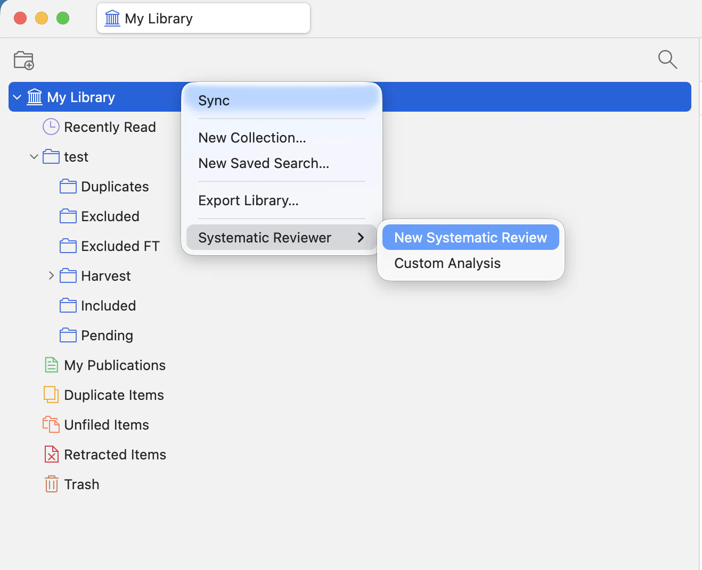
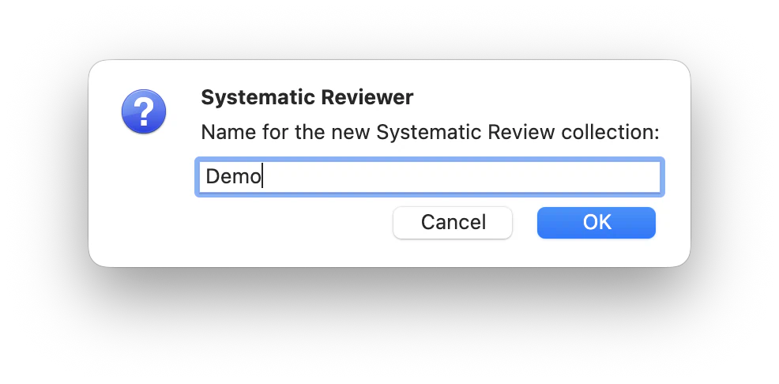
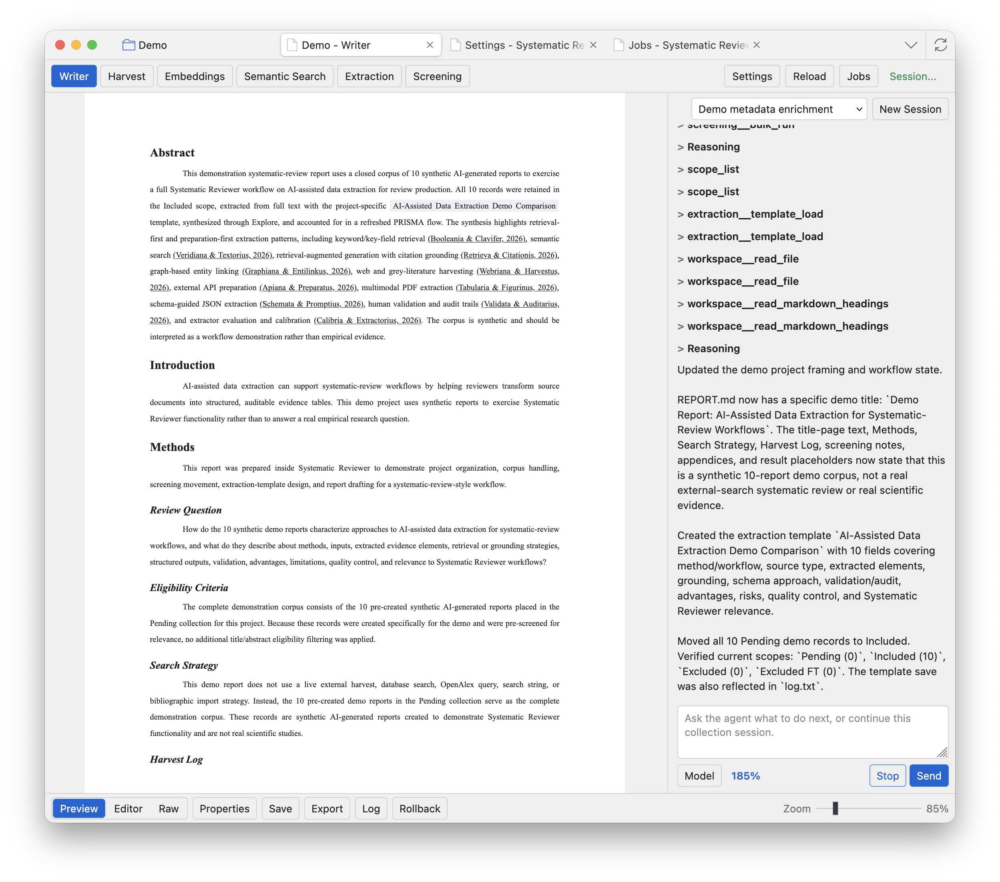
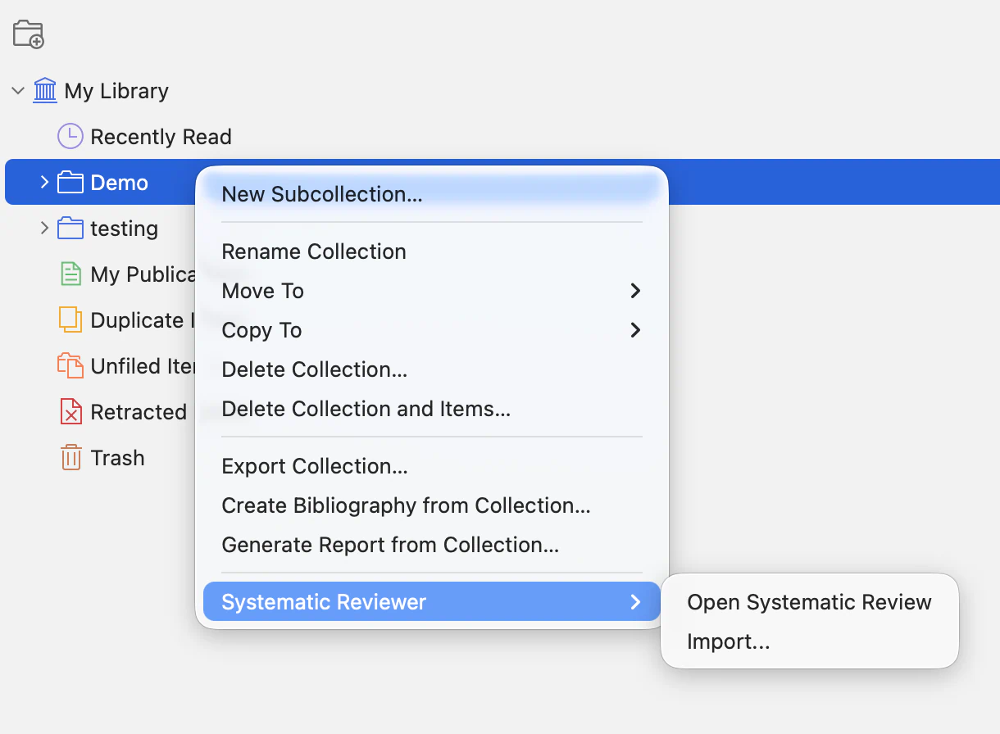

Create or Open a Project
A Systematic Reviewer project is a dedicated Zotero collection tree created by the plugin. That project collection becomes the workspace boundary for reports, screening, extraction, generated outputs, and project-managed storage.
Create a new project
To create a new project, secondary-click My Library, open Systematic Reviewer, then choose either New Systematic Review or Custom Analysis. New projects are created as their own Systematic Reviewer collection trees.
Project type guidance. Current testing and guidance focuses on New Systematic Review. Custom Analysis is more flexible and lets you work with your own PDF or text-based files for other kinds of data, but that flexibility also means the agent does not receive the same systematic-review-specific direction. In custom analysis projects, be more explicit about what you want to achieve.

Confirm project setup
Name the project and confirm. Zotero creates the project collection, the standard project subcollections, and the Systematic Reviewer project items. The workspace opens in a Zotero tab when the project is ready.


Open an existing project
To open an existing project, secondary-click the main parent collection that Systematic Reviewer created for that project, open Systematic Reviewer, then choose Open Systematic Review. Opening an existing project does not create a second project.

Bring in records from your own collections
Systematic Reviewer does not create projects directly inside existing user-made collections. This avoids mixing generated project folders and project-managed outputs into collections you already use for ordinary Zotero work. To use records from an existing collection, create a dedicated Systematic Reviewer project first, then import or copy records from your Zotero collections into that project through the Harvest import tools.
Create new projects from My Library. Open existing projects from the project parent collection that Systematic Reviewer created. Use Harvest import when you want to bring records from another Zotero collection into a project.